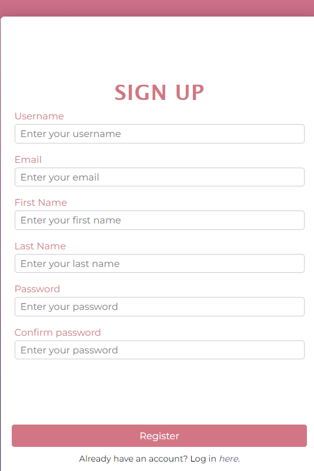
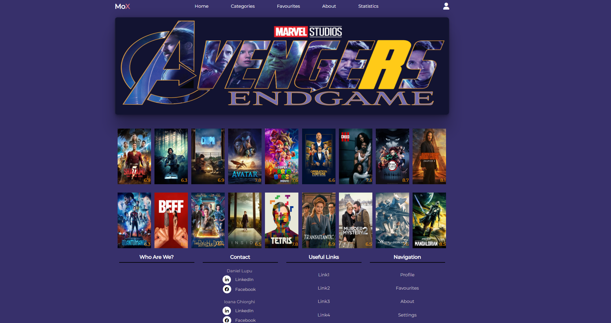

MoX - Movies and TV Shows Explorer
Actori
- Ciot Tudor
- Romascu Valentin Gabriel
1. Introducere
1.1 Scop
Scopul principal al acestui document este de a oferi o imagine de ansamblu aprofundată a aplicației online MoX - Movies and TV Shows Explorer. Acesta va descrie funcțiile, caracteristicile și interfețele software-ului, precum și ceea ce va face și limitările pe care trebuie să le respecte. Utilizatorii potențiali ai programului sunt publicul țintă pentru această lucrare.
1.2 Convenții
Acest document a fost creat pe baza modelului IEEE System Requirement Specification Documents.
1.3 Utilizatori potențiali
Aceast document este destinat echipei de dezvoltare și designerilor care lucrează la dezvoltarea, îmbunătățirea și menținerea aplicației, dar poate fi de asemenea utilă și pentru managerii de proiect care coordonează activitățile de dezvoltare, precum și pentru alte persoane interesate de specificațiile și detaliile aplicației.
1.4 Scopul aplicației
MoX - Movies and TV Shows Explorer este o aplicație online destinată utilizatorilor care își doresc să găsească cu ușurință informații detaliate despre filme și seriale TV. Această platformă este o sursă ideală pentru cinefili și pentru oricine dorește să descopere noi producții de film sau televiziune.
Prin intermediul MoX, utilizatorii pot căuta filme și seriale TV, pot vedea informații detaliate despre producțiile dorite, precum și recenzii și ratinguri date de alți utilizatori. De asemenea, aplicația permite utilizatorilor să salveze producțiile preferate în lista lor de vizionare și să primească recomandări personalizate bazate pe istoricul lor de vizionare.
MoX oferă, de asemenea, o interfață prietenoasă și ușor de utilizat, astfel încât orice utilizator, indiferent de nivelul lor de cunoștințe în tehnologie, să poată interacționa cu aplicația fără probleme.
În general, MoX - Movies and TV Shows Explorer este o aplicație ideală pentru cei care doresc să descopere noi producții de film sau televiziune, să găsească informații detaliate despre acestea și să își organizeze lista de vizionare.
1.5 Referințe
2. Descriere generală
2.1 Descrierea proiectului
MoX - Movies and TV Shows Explorer este o aplicație online care oferă utilizatorilor acces la informații detaliate despre filme și seriale TV. Aceasta permite utilizatorilor să caute producții cinematografice, să afle detalii despre distribuție, rating-uri și recenzii, precum și să-și organizeze propriile liste de vizionare.
2.2 Funcționalități
Aplicația oferă o experiență de utilizare intuitivă și eficientă, fiind proiectată pentru a satisface nevoile utilizatorilor interesați de descoperirea și organizarea producțiilor cinematografice și TV.
Navbar :- Bara de navigare (navbar) este prezentă în antetul aplicației și poate fi accesată în mod constant pe toate paginile.
- Aceasta conține un logo reprezentativ al aplicației, oferind un element vizual recunoscut utilizatorilor.
- Meniul de comenzi din bara de navigare include opțiuni importante pentru navigarea în aplicație, cum ar fi "Home" (Pagina principală), "Movie List" (Lista de filme), "Statistics" (Statistici) și "About" (Despre).
- Pe dispozitivele mobile, bara de navigare este comprimată și poate fi extinsă prin selectarea unei iconițe din partea dreaptă sus a ecranului.
- Scopul barei de navigare este de a facilita utilizatorilor navigarea rapidă și ușoară în cadrul aplicației, oferind acces direct la paginile și funcționalitățile cheie.
- Logo-ul aplicației contribuie la crearea unei identități vizuale distinctive și memorabile, iar meniul de comenzi oferă o navigare structurată și intuitivă.
- Prin intermediul barei de navigare, utilizatorii pot accesa rapid și convenabil paginile dorite și pot explora diferitele funcționalități și informații disponibile în aplicație.
- Designul și interacțiunea barei de navigare sunt adaptate pentru a se potrivi atât pe dispozitive desktop, cât și pe dispozitive mobile, asigurând o experiență coerentă pentru utilizatori indiferent de platforma folosită.

Footer :
- Footer-ul este afișat în partea de jos a fiecărei pagini din aplicația noastră, oferind informații contractuale importante.
- În secțiunea footer, utilizatorii pot găsi următoarele informații:
- Termeni și condiții - Aici se găsesc informații detaliate referitoare la termenii și condițiile de utilizare a aplicației noastre.
- Politica de confidențialitate - Această secțiune oferă utilizatorilor detalii despre modul în care gestionăm datele lor personale și cum le protejăm confidențialitatea.
- Contact - Utilizatorii pot găsi informații despre cum pot intra în contact cu echipa noastră, cum ar fi adresa de e-mail sau numărul de telefon.
- Footer-ul servește drept o sursă importantă de informații legate de contract și facilitează interacțiunea utilizatorilor cu aspectele legale și de suport ale aplicației noastre.
- Pagina de prezentare generală este pagina inițială care apare la accesarea aplicației noastre si se gaseste la adresa /overview.
- Utilizatorii au două opțiuni: se pot înregistra sau se pot autentifica pentru a continua utilizarea aplicației.
- Sunt afișate două butoane distincte: unul pentru înregistrare și unul pentru autentificare.
- Pe fundalul paginii se află un colaj atrăgător cu mai multe imagini reprezentând diverse filme.
- Scopul colajului este să capteze atenția și interesul utilizatorilor, creând o atmosferă cinematografică și invitându-i să exploreze mai departe.
- Pagina de autentificare (login) este o pagină dedicată introducerii numelui de utilizator și parolei.
- Această pagină poate fi accesată la adresa /login.
- Utilizatorii sunt invitați să completeze câmpurile necesare pentru a se autentifica în aplicație.
- Pe pagina de autentificare, utilizatorii pot introduce numele de utilizator (username) și parola asociată contului lor.
- Scopul paginii de autentificare este de a verifica identitatea utilizatorului și de a permite accesul în contul personal.
- Utilizatorii pot apăsa pe un buton de autentificare pentru a trimite datele introduse și a confirma autentificarea.
- Dacă datele introduse sunt corecte, utilizatorii vor fi redirecționați către pagina principală a aplicației, Home page.
- Pagina de autentificare este esențială pentru a asigura securitatea și protecția conturilor utilizatorilor în aplicația noastră.
- Pagina de înregistrare este o pagină dedicată în care utilizatorii pot crea un cont nou în aplicația noastră.
- Această pagină poate fi accesată la adresa /register.
- Utilizatorii sunt invitați să completeze câmpurile necesare pentru a crea un cont.
- Pe pagina de înregistrare, utilizatorii pot introduce următoarele informații: nume, prenume, username (nume de utilizator), parolă și adresa de email.
- Scopul paginii de înregistrare este de a permite utilizatorilor să-și creeze un cont personalizat în aplicație.
- Utilizatorii trebuie să completeze toate câmpurile obligatorii pentru a finaliza procesul de înregistrare.
- Pagina de înregistrare poate include și un câmp de confirmare a parolei, unde utilizatorii trebuie să reintroducă parola pentru a se asigura că nu au fost făcute erori de tastare.
- După finalizarea înregistrării cu succes, utilizatorii pot fi redirecționați către pagina principala a aplicatiei, Home page.
- Pagina de înregistrare este esențială pentru a permite utilizatorilor să aibă acces la funcționalitățile și conținutul personalizat oferit de aplicația noastră.

- Pagina principală (Home Page) poate fi accesată la adresa /.
- Pe această pagină veți găsi un banner vizual cu informații despre filme.
- Filmul din banner se schimba la cateva secunde.
- Bannerul nu este afișat pe dispozitivele mobile, pentru a simplifica experiența utilizatorilor.
- Filmele prezentate în banner sunt obținute prin apelarea unui API la The Movie Database (TMDb), o sursă externă de încredere pentru informații despre filme.
- Sub banner, veți găsi cinci rânduri separate de filme din categorii diferite.
- Puteți naviga prin aceste rânduri de filme folosind funcționalitatea de swipe right/swipe left.
- Atunci când plasați cursorul mouse-ului peste un film, veți vedea titlul și ratingul acestuia.
- Această funcționalitate vă ajută să obțineți informații suplimentare despre fiecare film înainte de a decide să-l vizionați.


Details page :
- Pagina de detalii a filmului poate fi accesată la adresa /movie/{movieId}, unde {movieId} reprezintă identificatorul unic al filmului.
- Pe această pagină veți găsi informații detaliate despre filmul selectat.
- Ratingul filmului este afișat în mod vizibil, oferind o perspectivă asupra calității și popularității acestuia.
- Durata filmului este prezentată pentru a vă ajuta să estimați cât timp durează vizionarea.
- Genurile din care face parte filmul sunt enumerate, oferindu-vă o idee clară despre tipul de conținut pe care îl veți găsi.
- Actorii principali care joacă în film sunt menționați, permițându-vă să identificați distribuția și să aflați mai multe despre interpretările lor.
- Poze cu actorii sunt disponibile, adăugând o dimensiune vizuală în prezentarea lor.
- O descriere cuprinzătoare a filmului este prezentată, oferindu-vă un context și o perspectivă asupra poveștii și tematicii acestuia.


- Se gaseste la adresa /list.
- Pagina "Movies List" este o pagină în care utilizatorii pot vizualiza și filtra filmele în funcție de trei categorii: gen, rating și anul lansării.
- Pe pagina "Movies List", utilizatorii pot interacționa cu trei dropdown-uri separate pentru a selecta opțiunile de filtrare dorite.
- Filtrarea poate fi realizată pe baza genului, ratingului și anului lansării filmelor.
- După aplicarea filtrelor, filmele care corespund criteriilor de selecție vor fi afișate utilizatorului.
- Fiecare film este prezentat cu o imagine reprezentativă și o descriere concisă.
- Pagina "Movies List" include și un buton de căutare, unde utilizatorul poate introduce un cuvânt cheie sau numele unui film pentru o filtrare mai usoara.
- În partea de jos a paginii, se afișează o paginare care permite utilizatorului să navigheze prin diferitele pagini de rezultate.
- Utilizatorul poate selecta o pagină specifică sau poate folosi butonul "Next Page" pentru a avansa la pagina următoare.
- De asemenea, în partea de jos a paginii se găsește un buton care permite utilizatorului să selecteze numărul de filme dorit pentru afișarea într-o singură pagină.


My profile page :
- Pagina "Profile" (Profil) poate fi accesată la adresa /profile și reprezintă o pagină dedicată informațiilor și acțiunilor legate de contul utilizatorului.
- În partea stângă a paginii, utilizatorul poate vizualiza un meniu vertical care conține mai multe opțiuni pentru comenzi:
- "Account Overview" (Prezentare generală a contului) - afișează informații despre contul utilizatorului, cum ar fi nume, adresă de e-mail și alte detalii relevante.
- "Edit Profile" (Editare profil) - permite utilizatorului să acceseze o pagină unde poate modifica informațiile de profil existente.
- "Change Password" (Schimbare parolă) - duce utilizatorul la o pagină unde poate actualiza parola contului său.
- "Favourite Movies" (Filme favorite) - afișează o listă de filme favorite ale utilizatorului.
- La selectarea unui buton din meniu, se va afișa pagina corespunzătoare în partea dreaptă a ecranului.
- Pagina "Account Overview" conține informații detaliate despre contul utilizatorului și poate afișa, de exemplu, numele, adresa de e-mail și alte detalii relevante.
- Pagina "Account Overview" include și un buton "Edit Profile" (Editare profil), care permite utilizatorului să acceseze pagina de editare a profilului pentru a actualiza informațiile personale.
- Pagina "Change Password" (Schimbare parolă) oferă utilizatorului posibilitatea de a introduce noile date de autentificare pentru a-și actualiza parola.
- Pagina "Favourite Movies" (Filme favorite) afișează o listă a filmelor preferate ale utilizatorului, oferindu-i astfel posibilitatea de a reveni rapid la filmele pe care le-a selectat anterior.
- În paginile "Edit Profile" și "Change Password", utilizatorul poate introduce informațiile cerute în câmpurile corespunzătoare și apoi apăsa butonul corespunzător pentru a finaliza acțiunea.


Admin page :
- Pagina "Admin" (Administrator) este o pagină specială care poate fi accesată la adresa /admin și este disponibilă doar pentru utilizatorii cu rol de administrator.
- Pe pagina "Admin", administratorul are acces la informații și funcționalități specifice pentru gestionarea utilizatorilor înregistrați în aplicație.
- Unul dintre principalele scopuri ale paginii "Admin" este de a permite administratorului să vizualizeze o listă completă a utilizatorilor înregistrați în aplicație.
- Pagina "Admin" oferă, de asemenea, posibilitatea administratorului de a efectua modificări sau acțiuni specifice asupra utilizatorilor, cum ar fi actualizarea datelor de profil.
- Este important de menționat că accesul la pagina "Admin" este restricționat și disponibil doar pentru utilizatorii care dețin rolul de administrator, asigurând astfel o securitate și un control adecvat asupra funcționalităților administrative.
- Pagina "Admin" reprezintă o zonă dedicată gestionării și administrării eficiente a utilizatorilor în cadrul aplicației, permițând administratorului să monitorizeze și să modifice datele utilizatorilor într-un mod controlat și sigur.
Statistics page : 404 Not found page
- Pagina "Not Found" (Pagina nu a fost găsită) este o pagină care este afișată atunci când path-ul (calea) accesată de utilizator nu este recunoscută în cadrul aplicației noastre.
- Această pagină poate fi accesată în cazul în care un utilizator introduce o adresă URL incorectă sau încearcă să acceseze o pagină care nu există.
- Pagina "Not Found" conține un mesaj informativ care indică utilizatorului că pagina solicitată nu a fost găsită.
- De asemenea, pagina "Not Found" poate include un link care redirecționează utilizatorul către pagina de "Home" (Pagina principală).
- Link-ul către pagina de "Home" poate oferi o opțiune convenabilă pentru utilizator de a reveni la pagina principală a aplicației și de a continua navigarea.
- Pagina "Not Found" are rolul de a îmbunătăți experiența utilizatorului prin furnizarea unei reacții corespunzătoare atunci când se întâlnesc erori de navigare sau adrese URL invalide.
Este important de reținut că toate paginile sunt responsive și se vor adapta automat la diferite dimensiuni de ecran.
2.3 Utilizatori
- Guest: Aceștia sunt utilizatorii care accesează site-ul MoX fără a fi autentificați cu un cont de utilizator. Aceștia pot căuta filme și seriale TV și pot vizualiza informații despre acestea, dar nu pot adăuga produse în liste de vizionare sau în lista personală de produse vizualizate.
- User: Aceștia sunt utilizatorii care s-au înregistrat cu un cont de utilizator și s-au autentificat în aplicația MoX. Aceștia pot căuta filme și seriale TV, pot vizualiza informații detaliate despre acestea și pot adăuga producții în liste de vizionare sau în lista personală de produse vizualizate.
- Admin: Acești utilizatori au acces la funcționalități suplimentare de administrare a site-ului și pot efectua acțiuni precum adăugarea de noi produse, modificarea și ștergerea acestora, moderarea interacțiunilor utilizatorilor sau analiza datelor de utilizare pentru îmbunătățirea performanței și a experienței utilizatorilor.
2.4 Mediu de operare
MoX este disponibilă într-un format online, accesibil de pe orice dispozitiv cu conexiune la internet, oferind utilizatorilor flexibilitate și accesibilitate.
2.5 Design si constrangeri de implementare
Aplicația MoX a fost dezvoltată folosind Node.js, un mediu de execuție JavaScript, pentru a crea serverul web care primește și procesează cererile de la utilizatori. Pentru partea de frontend, HTML, CSS și JavaScript au fost folosite pentru a crea interfața cu utilizatorul.
3. External Interface Requirements
3.1 User Interfaces
3.2 Interfața software
Cerințele minime de software ale MoX sunt un browser funcțional și conexiune la Internet.
3.4 Interfața de comunicare
MoX necesită conexiune la internet. Comunicarea standard care trebuie utilizată este HTTP.